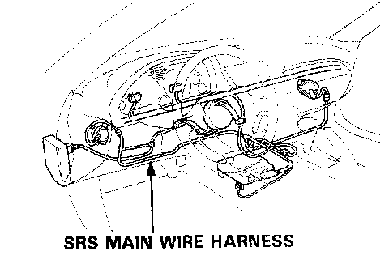
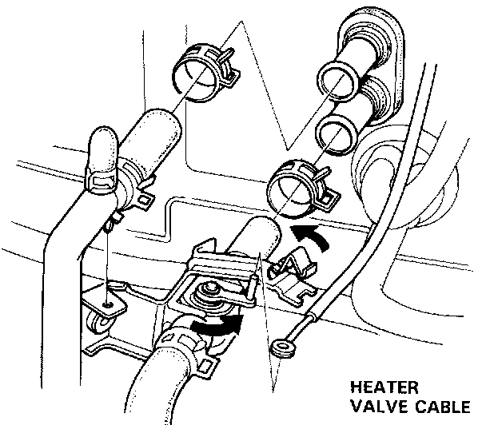
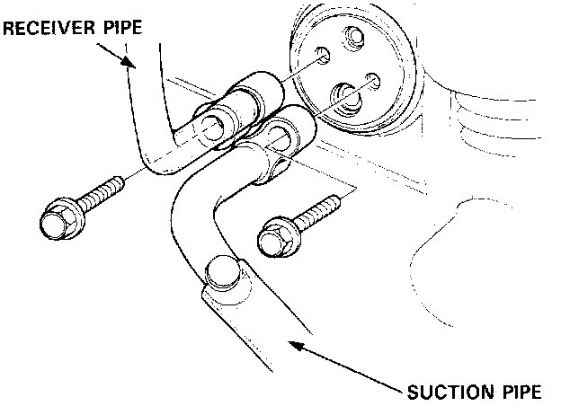
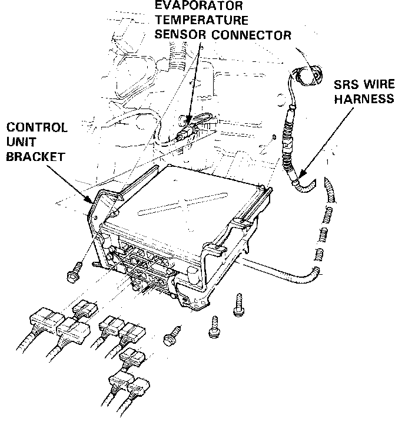
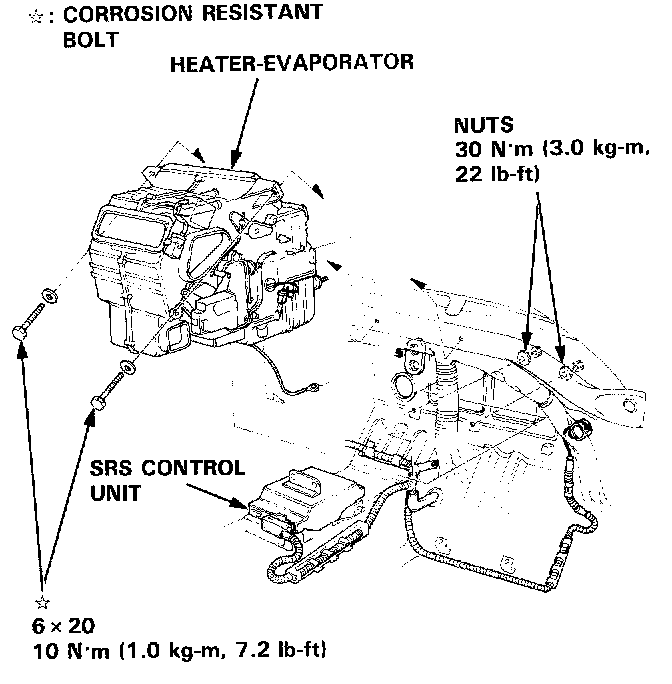
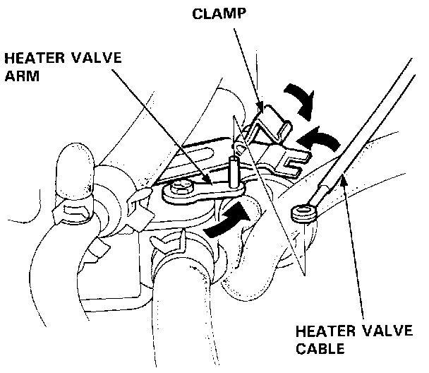

Heater-Evaporator Unit Replacement
Replacement

SRS wire harness is routed near the heater.
CAUTION:
- All SRS electrical wiring harnesses are covered with yellow outer insulation.
- Before disconnecting the SRS wire harness, install the short connector on the airbag.
- Replace the entire affected SRS harness assembly if it has an open circuit or damaged wiring.
1. Remove the blower.
2. When the engine is cool, drain the coolant from the radiator.
WARNING:
- Do not remove the radiator cap when the engine is hot; the coolant is under pressure and could severely scald you.
- Keep hands away from the radiator fan. The fan may start automatically without warning and run for up to 30 minutes, even after the engine is turned off.
CAUTION: Radiator coolant will damage paint. Quickly rinse any spilled coolant off painted surfaces.
3. Disconnect the heater hoses at the heater. Coolant will run out when the hoses are disconnected, drain it into a clean drip pan.

4. Disconnect the heater valve cable from the heater valve.
5. Remove all refrigerant from the A/C system with a 10 refrigerant recovery system.

6. Disconnect the receiver line and the suction line from the evaporator. Cap the open fittings immediately to keep moisture out of the system.
7. Remove the dashboard. Body and Frame
8. Remove the heater duct.

9. Remove the mounting bolts(4) and disconnect the connectors from control units and evaporator temperature sensor connector from the control unit bracket, then remove the control unit bracket.
10. Remove the enclosure woofer.
11. Disconnect the connectors from all the actuators and sensors attached to the heater-evaporator.

12. Remove the mounting bolts(2-under the dash) and nuts(2-under the hood), then remove the heater-evaporator through the passenger door.
13. Install in the reverse order of removal, and:
- Apply sealant to the A/C line grommets.
- Do not interchange the inlet and outlet heater hoses. Make sure that the hose clamps are tight.
14. Fill the radiator and reservoir tank with the proper coolant mixture. Bleed the air from the cooling system.
CAUTION: Follow the sequence described in the air bleed procedure. If you don't, you may leave air in the system which could damage the engine.

15. If necessary, adjust the heater valve cable:
- Set the air mix control motor at COLD position.
- Connect the end of the cable to the heater valve arm.
- Gently slide the cable outer housing back from the end enough to take up any slack in the cable, but not enough to make the other end move the arm on the air mix motor. Then snap the clamp down over the cable housing.
16. Turn the blower on and make sure that there is no air leakage.
17. Charge the system, and test performance.